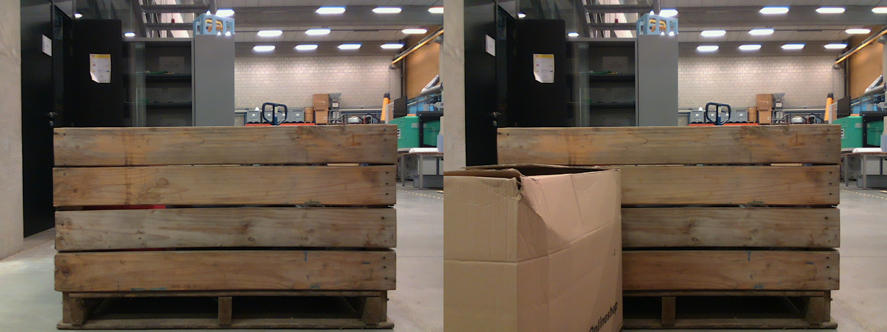
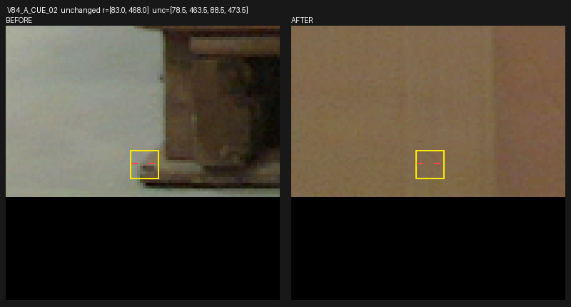
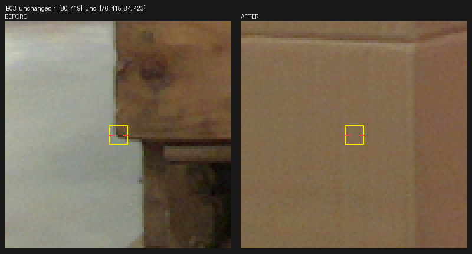

가림 전 영상에서 먼저 고정한 6개 목재 단서 중 4개는 가림 후에도 보이고, 2개는 앞쪽 판지에 가려집니다. 두 AI 검토가 일치했으며, 같은 위치의 실제 crop으로 확인했습니다.
KU Leuven Pallox의 기존 TRAIN 첫 촬영 쌍(0.55m_lab:0000/0001)입니다. 사용자는 현재 평가223장이 직접 촬영한 독립 자료라고 확인했습니다.

두 검토자가 before만 보고 좌표와 불확실 범위를 봉인했습니다. 8개 제안 중 상단 두 곳이 중복되어 물리 단서는 6곳입니다. 이후 after를 열어 같은 범위를 대조했습니다.
| 물리 단서 | 원 제안 ID | Before | After: 두 AI 일치 | 저장 source crop 가용성 |
|---|---|---|---|---|
| 상단 오른쪽 | V84_A_CUE_00 / B01 | 보임 | 계속 보임 | MISS |
| 상단 왼쪽 | V84_A_CUE_01 / B02 | 보임 | 계속 보임 | FULL |
| 왼쪽 base-runner | V84_A_CUE_02 | 보임 | 판지에 가림 | FULL |
| 오른쪽 base-runner | V84_A_CUE_03 | 보임 | 계속 보임 | PARTIAL |
| 최하단 넓은 판재 왼쪽 | B03 | 보임 | 판지에 가림 | FULL |
| 최하단 넓은 판재 오른쪽 | B04 | 보임 | 계속 보임 | PARTIAL |
아래 두 crop에서 노란 범위와 좌표는 그대로입니다. 목재 단서가 사라진 자리와 그 앞을 덮는 별도 판지가 함께 확인됩니다.


이는 AI가 관찰한 물리 단서의 조건부 source 증거입니다. 사람 정답이나 기존 virtual8 키포인트의 대응 라벨은 아니며, self 가림도 주석하지 않았습니다. 두 사진은 같은 물체의 한 촬영 쌍입니다.
저장 source q8·crop 크기·box는 두 사진에서 같습니다. 전체64 cue/crop 조합은 FULL4·PARTIAL2·MISS58입니다. 이 q는 teacher로 만든 source sampling 위치이며 실제 초기 detector의 native8 출력은 아닙니다. 입력 가용성과 단서의 가시성을 분리했습니다.
다음은 같은 방식으로 공개 실사의 보조감독 자료를 확대하는 작업입니다. 현재 평가셋은 계속 학습·문턱·모델 선택에서 제외합니다. 이번 단계의 새 학습·모델 추론·현재 평가·PnP는 모두0입니다. 전체 문제는 아직 해결되지 않았습니다.
원 좌표·교차검산·한계·다음 결정 · 원 제안8개 실제 paired crop · 직전 초기 query 대응 감사 V83
출처: KU Leuven Pallox 공개 자료, DOI10.48804/DJLDFS. 원본·출처·이전 부정 결과를 보존했습니다.